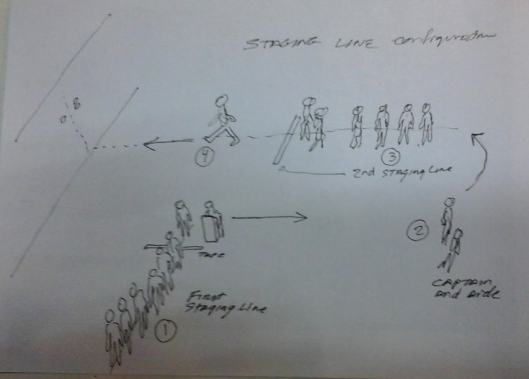

This is my narrative on my experiences when I conducted my first MWI portal egress and transport.
It was done at the NAS NASC Pensacola Florida base within the ELF sub-facility at NAMI. The year was 1981. I was an AOCS in training as a Naval Aviator.
I had earlier agreed to join MAJestic and give up my role as a Naval Aviator. As such, I was trained to use targeting feducials, and had brain surgery to have two kits of probes implanted within my skull…
Background Information prior to Portal Egress
For readings on what happened prior to this event, the reader can read these other posts…


The Portal Egress Narrative
After the probes were implanted, I was instructed to wait outside of the (implantation) cubicle. There wasn’t much to do there. It was just a simple large room with a couple of rectangular posts in the middle. The walls were white and unadorned. I waited alone for about fifteen minutes and then I was joined by my colleague Sebastian.
Sebastian (not his real name) is the name of the other colleague that entered MAJestic with me. We both signed up at the same time, and were trained and implanted at the same time. He was implanted in a implantation booth next to mine.
Together, we waited for about 45 minutes. There were some chairs (Charles Eames Fiberglass Shell Chair) against the wall, so we sat in them and chatted some. There was a lot to say, but strangely we only made small talk. Perhaps we were a little in shock, or maybe it was the medicine that they gave us in the orange juice. There was something big and important that we were involved in, though we had no idea what it was.
(As an aside, Sebastian was not always in his implantation cubicle like I was. For a while, he went elsewhere. Where he went and what he did, as well as why it was different from me is unknown. The reader should not get too hung up on this little tidbit of obscure detail elaboration. It is just additional information that may or may not have relevance to the issue at hand.)
Humans need to be a multi-planet species. -Elon Musk
There wasn’t too much to do there. On the wall to our left was a bulletin board with four announcements neatly pinned in place. So I looked it over for a while. That killed about five minutes. Then we sat there staring at the fire extinguisher on the square pillar in front of us. We chatted easily. Both of us had no clue as to what lay in store for us. So we discussed what it might be. We talked about the orange juice that we drank and the probes that were shot into our skull. But, mostly we speculated about what our future might hold in store for us.
Sebastian wanted to know if I drank the orange juice given to us, and I explained that indeed I did drink it. He wondered what they mixed with it. I had no idea what it was, nor why the dosage was so critical.
We talked about what kind of life was planned for us. We had no clue. We thought that it would be important, but we didn’t know what it was. We had no idea about the many things that surrounded us.
In the Waiting area
“we have things out there that are literally out of this world, better than Star Trek or what you see in the movies.” -James Goodall
Eventually the Commander returned and walked us over to another part of the building. Here was an open space set off and away from the offices and cubicles in the building. In it were 25 chairs with a built in writing surface. These are standard classroom desks as found in universities and educational establishments throughout the country. These chairs were arranged in five rows of five chairs. Facing the chairs was a wide podium with a desk and a table next to it. On the table were some papers, pencils and office stationary. On the desk were two huge bound books of dot-matrix computer printouts.
Dot matrix printing or impact matrix printing is a type of computer printing which uses a print head that runs back and forth, or in an up and down motion, on the page and prints by impact, striking an ink-soaked cloth ribbon against the paper, much like the print mechanism on a typewriter. However, unlike a typewriter or daisy wheel printer, letters are drawn out of a dot matrix, and thus, varied fonts and arbitrary graphics can be produced.
The Others who also Conducted Portal Egress

On the chairs were the same girls that we saw earlier at the lecture. They were busy filling out some papers that were given to them. Again, as we noticed earlier, all the girls were very pretty and attractive.
They all wore civilian clothes, which is very odd as were in a very restricted part of the base, were no civilians were ever permitted. (Sebastian and myself were wearing our uniforms.)
They were all our age range; in their low to middle 20’s, and were busy answering the questions on the form, and speaking in low tones to each other from time to time.
These were all very attractive girls without exception. There weren’t any fat, ugly, squat or marginally attractive girls in the group. There were absolutely NO fat or plump girls. All were slim. Even the more curvy girls had really thin waists. Though they were in different heights and body shapes, not one had any extra body fat. Lovers of “big booty” would be very unhappy.
It was almost as if it was some kind of a smorgasbord of beautiful women.
This is not to say that they were all models. Some were tall, while others were short. Some were slightly curvy, while others were thin and leggy.
Zaftig /zäftig/ adjective: (of a woman) Having a full, rounded figure; plump. Like that of Hilda. See HERE.
It is almost like they were a collection of the kind of women which men fantasize about; a collection of the women from Playboy Magazine. Not one of the girls there were any less than an 9/10 on the attractiveness rating scale. I repeat; not one of the girls were anything less than jaw-dropping stunning.
The girls were all dressed nice. Though none of them carried purses, wore watches, bracelets, earrings, or rings. While their hair looked perfect, none wore bows or hair pieces of any shape or style.
In hindsight, this was an important point; a point that still eludes me to this day. These women were chosen to enter a SAP program, and were implanted (perhaps with a less invasive series of probes or probe kits) and were all attractive. Why would we be included with a group of very attractive women? What was their role that would involve such an obvious utilization of physical beauty? One can only speculate.
Special access programs (SAPs) in the federal government of the United States of America are security protocols that provides highly classified information with safeguards and access restrictions that exceed those for regular (collateral) classified information.
We joined the group of girls and noticed that none of them appeared to have had the probes implanted in their skulls like we had. Instead, their hair was all in place, and they looked very attractive and chatty. Perhaps it was done at some other time.
However for us, we had our heads shaved with a band-aide on the top of our skulls. After all, our implantation procedure occurred in the late morning that Monday, and we first saw the girls prior to our implantation. The 15 to 20 women would have had to have been implanted previous to their filling out the forms. This would have taken all day to do so.
Filling out the Portal Egress Handout
We were led to the desk chairs where the ladies were sitting. About one half of them were open at the time. Once we sat down, the escort left us. As soon as we got our bearings, we both got up and selected different seats a little back towards the middle of the group. In short order, another seaman came towards us from the “front” of the area. He had a short stack of papers and a box of pencils in his two hands.
We were all given out a typewritten handout of questions that we were to answer, along with a pencil. This was a standard number two pencil with a yellow body and an eraser at the end. All of the pencils in the box that was handed out to us were all smartly sharpened, though they were of different lengths and sizes. The pencils were provided to us from a low cardboard box. All of the pencils were clean (if previously used) and sharpened to a very nice point.
The paper itself was a mimeographed handout. The handout consisted of two pages, both stapled sharply in the upper left hand side. Both sheets were had questions, so in total there were four sides of questions. All the questions were in the faded robin’s-egg blue color so typical of mimeographed printing. Additionally, each question consisted with a number, and a blank area from which to write our answers down upon. The blank area consisted of a long line. In other words; “_________”.
The Questions
The questions on the paper were innocuous, and appeared childish.
However, it was pointed out to us that we absolutely had to be truthful in answering the questions. It was better not to answer than to provide a wrong, or false answer. There was an intensity and seriousness to this request that is beyond my ability to convey at this moment.
This was not your average university quiz distribution. Not in the least. The impression that we had was that we needed to complete everything as accurately as possible to guarantee our successful roles in the organization.
I went down the list. The questions were all so silly. Who was our favorite actor? What was our favorite color, our favorite kind of pet, our favorite song, album, and group?
What kinds of girls were attractive to us? Their face shape, hair color, build, and mannerisms…? The details on what we found interesting about women were quite detailed and exacting. While the girls were obviously filling out the same form, they were obviously not having too much difficulty in filling the forms out.
What color of eyes did I find attractive? What face shape did I find attractive? What is my idea of the most attractive build of a woman? What is the ideal hair color for a woman? What part of a woman’s anatomy did I find most alluring? What kind of woman’s attitude that I found most attractive? What is my ideal female height?
Of all the questions, I would hazard a guess that good portions, maybe 30%, were related to the attractiveness of the female sex.
Questions about Sexual Interests
They were childish things indeed, and we felt like we were doing something that we gave up in seventh grade.
However, we were specifically told to be accurate as possible on this. In fact, we were told that it was critically important that we be as accurate as possible when answering the questionnaire. We were specifically told to put down the answers that were true for us and us alone, and not to provide answers that we think should belong there.
It is a good thing that this was pointed out to us, as we were willing to do anything that we were told. We wanted to be part of this…
…thing (whatever it was) and would tell them what ever we thought they wanted to hear. However, once we signed up, everything proceeded rather automatically. In fact, it was almost as if we were part of a large complex machine that was churning out some kind of special human agents.
We did not have a clue as to why we needed to fill out the handouts. We did not know why we had to be implanted. We did not know why we needed to drink the orange juice or go where they instructed us. We just listened and went.

Each of us filled out this innocuous appearing questionnaire, and I was able to do it rather quickly. There really wasn’t any cause to sit down and think about the answers. The answers came quickly and easily.
Yes. The questions were easy to answer.
Answering the Questions
What was my favorite pet? [A cat.] What was my favorite color? [Blue.] What face shape did I find most attractive in a girl? [Oval. I guessed. Up until that point in time, I never really thought about it at all.]
What color hair is the most attractive on a girl? [Black or dark brown, so I wrote dark brown.] It went on and on.
Some of the questions were rather specific and embarrassing. The questionnaire asked what part of a girl’s body is the most arousing to me to look at. [The breasts.] Other questions were just simply childish.
What was my favorite song? [“On the Border” by Al Stewart in his “Year of the Cat” album. It was, after all, 1981.] (Sebastian said Kashmir by Led Zeppelin.)
What was my favorite music group? [Robin Trower] (I said Robin Trower, but there wasn’t a printout ID for it, so I had to settle for Jimmi Hendrix.)
What was my favorite record album? [“Year of the Cat”]
What was my favorite food? [Pizza.] There were many others. Perhaps thirty in total, and they filled both sides of a stapled two page handout.
Exactly 30 years later, during my retirement, the team that flew out to deactivate me had (in their physical possession) the actual handout that I had filled out. I overheard them chuckling about it, and how dated it was. (I might have been immobilized by medication, but my mind was clear and my ears were functioning perfectly.) Obviously there was nothing in it that gave any impression or interests towards any kind of interest in children. Instead it described a young man’s (early 20’s) interests of female beauty in the early 1980’s. I fit the standard profile, as influenced (or reflective of) the Playboy magazine feature girls of that time. The girls were all curvy with large breasts and attractive oval faces. Which is a far cry from what central Arkansas in 2004 viewed as beautiful; Afro-American girls with “big booty” (huge asses) and big pouty lips. (Yuck!)
I wondered what all of this was for. Was it for some kind of ELF dating show like the television show “The Dating Game”? Were we going to join some kind of organization that would pair us up with these girls in accordance to our responses? After all, the girls also were filling out these questionnaires just like we were. Perhaps one or more of these girls would lie on our future paths as a type of destiny. Who knew? We were all obviously involved together in this kind of project; whatever it was. Thoughts ambled through my brain, confused, conflicted, and curious.
I wonder... Meeting attractive girls for mating without any romance? Hogwash. However, one must consider the importance of romance and dating. Consider the ritual of the dance. Nothing impresses a woman more than a man who knows how to dance. And by dance I mean ballroom dancing where you lead a gal across the dance floor. None of that “nae nae” nonsense. Basic ballroom dancing isn’t that hard. Start off with the waltz and foxtrot and you’ll be good for most weddings and cruises. A military version of The Dating Game? Impossible! The Dating Game is an ABC television show that distilled the 'swinging '60's' into jovial innuendo, gentle double entendres, & unstinting MOD aesthetics. With the huge colorful psychedelic daisies on the set walls, it seemed campily retrograde even for its day. It first aired on December 20, 1965 and was the first of many shows created and packaged by Chuck Barris from the 1960s through the 1980s. SAP participation...Clearly. From the lecture we knew that the young ladies were part of a SAP. We also knew that Sebastian and myself were part of a W(U)-SAP program. Was it possible that we were all part of a big general program or project, whereas Sebastian and myself were involved in the most sensitive portion of the program, and the ladies were also part of the project, but there roles were not so sensitive?
I filled it all out in about three minutes. It wasn’t that difficult at all, and then waited in the chair.
Handing in our Answers
About forty minutes later, the Commander walked over and checked my answer sheet. I gave him back his pencil. He asked me again “These answers are all accurate?”. I told him that they were, and watched him walk away with my paper in his hand.
He walked up to the desk at the front of the area, and assigned a number to each answer that I wrote down on the sheet. Most of the answers were easy to assign a code to. But some of them were more complex, and needed to be referenced by using the stack of bound computer print-outs on the desk. Obviously, our answers were specific and cross referenced with the four inch thick computer print-out and assigned a code. This code was then written down on to a separate form attached to a clipboard. Once the codes were assigned he handed the sheet to another seaman who was working on some equipment behind him. Then he walked away briefly.
Perhaps some of the answers that I provided in the hand-out had no clear comparative analog in the answer cross-reference print out. And, as such, the Commander had to improvise and come up with a close approximation for a best-fit solution.

The purpose of these codes was mysterious at the time. However, I understand the purposes and intentions behind them now. These codes helped to configure the implants to best reflect our natural inclinations and desires. Contrary to what you read on the Internet, you cannot be forced to like something you would not otherwise like.
You cannot be forced to enjoy something that you would otherwise not enjoy.
Probes used to Control our Emotions?
The probes need to be able to match and to control our natural emotional responses, and to do that; they needed to understand what appealed to us emotionally, as well as what naturally repelled us. (Also, the responses helped configure the probes towards a predilection towards specific female archetypes, but the reasoning behind this has eluded me to this day.)
The questions were very pre-Bill Clinton presidency. They did not ask if I liked boys, girls, children, or animals. At that time, it was assumed (as the vast bulk of Americans 99.99% were heterosexual in inclination). When I filled it out, I thought about the girls that I liked and why they appealed to me. I thought about all the Playboy magazines that I used to masturbate to and the Penthouse magazines as well.
I recalled that, at the time, I was extremely fond of the large breasted, voluptuous girls, with maybe a size 6 to 10 build. Now, of course, I happen to be fond of nice leggy girls with strong confidence and a big wide smile, and a bit of a jolly, playful nature.
However, back then, I was young in my 20’s and my exposure to women was limited to a hand full of girlfriends, and the magazines of the era. I would hazard a guess that the ideal female archetype for me at the time was Raquel Welch, or Farrah Fawcett. Though I was always a fan of Lonnie Anderson as well. Big hair, big smile, big breasts… I was a big fan.
Fox Studio loaned Welch to Hammer Studios in Britain where she starred in One Million Years B.C. (1966), a remake of the Hal Roach film, One Million B.C. (1940). Her only costume was a two-piece deer skin bikini. She was described as "wearing mankind's first bikini" and the fur bikini was described as a "definitive look of the 1960s". The New York Times hailed her in its review of the film (which was released in the U.K. in 1966 and in the U.S. in 1967), "A marvelous breathing monument to womankind." One author said, "although she had only three lines in the film, her luscious figure in a fur bikini made her a star and the dream girl of millions of young moviegoers". A publicity still of her in the bikini became a best-selling poster and turned her into an instant pin-up girl. The film raised Welch's stature as a leading sex symbol of the era. In 2011, Time listed Welch's B.C. bikini in the "Top Ten Bikinis in Pop Culture". -Wikipedia
A heterosexual person cannot be compelled to be a homosexual person. A normal and healthy man cannot be compelled to be a pedophile. A person who has an interest in football, cannot be compelled to enjoy watching soap operas.
Our interests are encoded in the quantum recesses of our being and thus were extremely difficult to modify. Our minds, both physically, socially, and genetically had already formed the physical arrangements and preferences in our brains. All of us had passed stringent tests, both mental and physical to verify that we were normal and healthy. It was in the best interests of the program that this health be maintained.
Manifested physical and emotional desires are formed in the brain by a complex brew of experiences and genetic markers. They vary from person to person. They are, under the current human technological level, unchangeable and unalterable.
If a person knows precisely what can motivate a person, then that person can ultimately control another through manipulation. This is the carrot-leads-the-donkey technique. Since the probes can access the agent’s brain, it is important on how to utilize the agent’s inherent individual motivations to control them. This applies to everyone implanted. Not only just us, but also to the young women next to us.
Waiting to Leave
“I'd always known that when you went through one of these doors, you went to another planet, and that that other planet might be so far away, you couldn't fly there in spaceship in a million years. Somehow, the whole thing had never seemed strange before today.” ― Mary G. Thompson, Escape from the Pipe Men!
We chatted with a couple of the girls beside us. I remember this event quite clearly. The two girls sat together. One was in a yellow chair, with the other girl sat in a red chair and they both got up and slid over to us and chatted next to us. They were both to my right, and then I noticed them when they got up and moved to the row of chairs directly behind us and to our left.
We just sat there talking.
To our side was the huge open chamber where we first entered the building. In it were others; the others whom came before us. In this huge open area we watched them line up into a line and be checked over by the naval personnel there. We all could watch them in the open access room next to us.
There we watched the people line up in the staging lines. We watched them walk from one line to another. Then from that line, we watched them walk forward towards the wall with the embedded fiducials. As they walked towards the wall, we repeatedly watched them disappear.
Disappear! That is correct. We watched them walk straight into nothing. Poof! Gone. End of story.
We watched this over and over. At first it was a great curiosity. So we would watch it with the next person. Disbelief would flood our minds (at least mine) and so we would watch it happen yet again, and again. After about the sixth time, you pretty much get the idea of what was going on. People were just going into some kind of special transport tube; tunnel or portal of some type. The walked into something that we could not see. It swallowed them up. Then there was nothing else. It was amazing.
A New Mystery
This was a subject of great interest. We talked about the mysteries of what we were getting ourselves into and what was going on with the people walking into thin-air in the room next to us. We wondered about where they were going and why. All kinds of thoughts crept into our mind. The thoughts were pretty amazing as they varied from time travel, to a different dimension. But the fact was that we hadn’t a clue as to what was going on. We then glanced over to the handout that we were all holding and queried about it.
“What does this handout and these questions have to do about the invisible door?”
I asked them what their preferences were, and we started to play a sort of game. They would say “I like the color yellow”, and I would then look down at my paper and say “I like the color green”. Then it would be my turn and I would say “I like cats”, and the girl would look down at her paper and say “I like dogs”. It continued like that up until I showed them what I liked in girls. They were pretty taken aback.
“Why do you like girl’s boobies?” they asked. “Why not the eyes or the long legs?” We shared our answers, though the two girls (that we talked to) wanted to hide what they found most attractive in their desires for men. I don’t blame them. But I showed them what I liked, and the girls were surprised. They asked me why I didn’t like smooth skin, big blue eyes or long shapely legs. I told them that I didn’t know why I liked what I liked, just that I did.
I will always maintain my fondness for female breasts, but I have to admit, that as I get older, I have really begun to appreciate the back side of the fabulous female form. Those legs, the butt, and the back all are quite awesome.
We shrugged our shoulders and continued the wait. There was a slight pause of a few seconds (not uncomfortable) and then we continued chatting.
In hindsight it was kind of funny that they showed us their papers and used three or four fingers to cover up their answers about what they found most physically attractive in a man. Now that I am older, and more nuanced about the ways of the world, I don’t think that I would be shocked by anything that they would have written. They could of written “a long penis” for all I care, but I don’t think that was what they wrote. Maybe they wrote “being tall”, “being a hard worker”, “famous”, “a good listener”, “having big hands”, “a family man”, or perhaps “reliable”. Maybe they want a rich man with a lot of money. Who knows? Somehow I think that their answers toward the physical desirability of a man was quite different what we would think it was. But, what they did actually write was hidden from us. There was no way that they were going to tell us; two strangers that they just met, what they found attractive in men. -From the article “Biologist's reading of lonely-hearts personal ads reveals what big-city women really want: Men with money” found HERE.
Anyways… Here’s the secret guys; a self-assured man who doesn’t seek validation or approval is wildly attractive to women.
As we sat there, the girls were slowly being called up by name. In general, it would take approximately ten to fifteen minutes from one girl to the next. One by one they were addressed and left our little group to talk with the petty officer at the podium. He would then verify that their answers were assigned the correct numerical designators.
Often he would ask them a question or two and revise the answers appropriately. Always making sure that their responses were cross referenced in a big printout (it was a big dot matrix printout, as was everything in those days) and they left. Over time the number of girls dwindled away until there were only about four or five girls and us two AOCs.
“Women in this country spend hundreds of millions of dollars every year on "romance books" whose pages are filled with knights in shining armor and genuine heroes coming to rescue the damsel in distress. Why do you suppose that is?” -Devvy Kidd, June 5, 2002
As we sat there and waited, we could easily see where the rest of the girls went.
Next to the waiting area was a large storage hangar. We could clearly see inside of it. It was adequately lighted, as you would expect a warehouse or aircraft hangar to be, but still a little on the dim side. There were two separate lines of people.
The girls would line up in the first line and then (one by one, individually) migrate to the second line. However, it was the second line that was the most impressive to us. For as each girl left the second line, they would walk forward taking three to four steps. They were walking directly towards the chiseled triangles in the cement block wall. On the final step they would walk into nothing and disappear.
“We now know how to travel to the stars. There is an error in the equations, and we have figured it out, and now know how to travel to the stars and it won’t take a lifetime to do it. It is time to end all the secrecy on this, as it no longer poses a national security threat, and make the technology available for use in the private sector. There are many in the intelligence community who would like to see this stay in the black and not see the light of day. We now have the technology to take ET home.” -Ben Rich, March 23rd, 1993 at a UCLA School of Engineering talk where he was presenting a general history of Skunk Works.

The girl sitting next to me (She was so cute. She was a brunette with large deep dark eyes and thick pouty lips.) jarred my elbow, and motioned to her left. “Do you see that?” She asked. I must admit that I wasn’t paying attention.
So she said “Watch.” As I sat there I watched a girl, one who was just minutes ago sitting in the chairs in front of us, walk forward in the cavernous room and completely disappear.
To us, it appeared that she walked into an invisible box.
It was as if a box that had invisible sides, and an invisible depth existed in the chamber. While it was difficult to make out, it was almost like there was an invisible fan with huge invisible blades slowly turning inside the box. And the people walked into this invisible fan, inside the invisible box.
This is exactly what it is like. I absolutely cannot think of a better way to describe this invisible machine. Imagine a big invisible fan, with heavy and slow moving invisible blades churning and grinding heavily inside a big invisible box that you walk into. Of course you can’t see anything, to an outside observer you are just walking into thin air. But that is decidedly not what it was like.
“Wow!” I said. Indeed, it was impressive, and I had never seen anything like it before in my life.
I suppose that it should have been more awe inspiring to me than it was. But we had a busy day, meeting the Commander, getting a hole drilled in our head and having seven projectiles fired into it. Not to mention drinking drug saturated orange juice. Now sitting next to, and talking with, who could easily have been a Playboy “centerfold” model. We were, for lack of a better word, a little stunned over the events of the day. We sat there and watched people disappear into nothingness. We watched perhaps four or five people do this and then turned our attention back to the girls next to us.
The reader must remember that the sight of females were mostly a rare site for us “aviation candidates” at the facility at the time.
In hindsight, we should have asked her what she was doing there and what program the girls were involved in. But, we didn’t. We chatted about our answers on the handout, and we speculated on what might be going on. The talk went from time travel, to a hidden doorway, to a machine that makes people invisible. Truly, we did not have a clue as to what was going on.
It was not like they blinked out of existence. They didn’t fade away. There was no bright flash, or sound. There wasn’t a shimmering surface that looked like water or wavy heat lines. Instead, it was like they walked into something that we could not see. It was very much like a hole, except that the hole was invisible to us. It was a vertical hole that had the edges of the hole and the depths of the hole completely invisible.
Departure
We waited, what seemed to us, a long time. But eventually a petty officer came and got me. He checked my identity and verified my name on his clipboard. Then he double checked the data that he had at his disposal with another seaman near the podium. Once, I was verified and cleared, he led me out of the waiting area into the large hanger area. He took me to the end of the first staging line, and said “Wait here.”.
Yes, our adventure began by entering into this mysterious transport portal. Like the others before us, we obeyed the instructions provided to us and entered the lines of people whom were entering this device.
I cannot transmit to the reader just how absolutely excited I was. I felt like it was Christmas, my birthday, my first sex, and my first love all at once. It was fireworks and pizza. It was jaw-dropping, pure amazement. Everything was coming together and I was going somewhere very special on a mission that was both mysterious and amazing.

I didn’t have to walk far, and he took me to the first of two staging lines. He had me stand there while verifying my answers in the paper on the clipboard. Again, he checked my name, and made sure that there were no mistakes on the paper. Then, when I had verified that my answers were correct, he took the sheet and went into a canvas-tented area that was setup inside the hangar (off to the side). He handed another petty officer the sheet and verified that the codes written down were correctly transcribed.
The 1st Stage Line
The staging line was very simple. It consisted of a line of people, mostly girls, waiting in a line of approximately six people. At the head of the line was a piece of tan colored masking tape affixed to the floor. Next to the tape was a podium. Another petty officer stood there. He held the arm of the person waiting in the line and would not let them proceed to the second staging line until it was time.
A “staging line” is a simple line or row where individuals wait until told to proceed to a different area. It is used to create an orderly process when moving or directing groups of people. In this application, there were two staging lines. This can also be called a “ready line”.
We were all quiet, apprehensive, and excited. In front of me was a tall blonde haired girl, and behind me was a cute short brunette who smiled back at me when I turned around to look at her. (I also shan’t ever forget her face. She had really large lips and dark brown eyes. Short, she was petite but very curvy where it mattered. She was a real cutie!) But we said nothing. We just watched the people in front of us walk into the void.
The two girls that we had talked to regarding what they found attractive in men had left maybe fifteen minutes before us. They were not in this particular line up that we were in.
I waited in the line for about seven to ten minutes. I would guess that a new person joined the line after two to three minutes. So in all actuality, the entry into the portal took from 2 to three minutes depending on the calibrations necessary.
Three people behind me was my colleagues turn. He waited expectantly like myself. He gave me the “thumbs up” (not only by showing his hand with a thumbs up, but additionally by nodding while looking into my eyes.) , and I returned it back to him. (Actually, I gave him a “chin up” nod and smile.) It was very exciting for us, and my heart was beating quite loudly. Eventually I reached the head of the first staging line. The petty officer checked his clipboard and held my arm with a shockingly strong grip. Then, when it was time for me to progress to the second line, he walked me to the second line. All the time holding my arm most firmly.
His fingers were holding my arm in a vice like grip, this was not any every day clutch.
The 2nd Stage Line
The second staging line was much like the first. Except that it was at a ninety degree angle to the first. Instead of facing north, it faced west.
It is unknown why I remember this direction as “North”. Certainly I had no way to know of my true geospacial orientation at that time.
I was brought up in front of the commander. Since my arm was being held in a rock-vice grip I was unable to salute. However the commander saluted me. He then looked at the clip board in front of him. Checked off the signature section while making sure that everything was in order. Then he nodded to me with a smile, and I was placed in the second line. The seaman who placed me there left, and I just stood alone, but very very excited.
I watched the people in front of me moving forward into the nothingness.
After a few minutes, the Commander joined me.
He stood next to me while we waited in line. He asked me if I was nervous, and I told him that I most certainly was. He stayed with me while the line advanced. When it came for my turn, the Commander looked me straight in the eye and saluted. Then he nodded; shook my hand, and said “Good luck” and smiled warmly.
Why all the special attention for me? He did not do this for any of the girls. No one was there for the girls. They just followed the directions from the Navy personnel. There wasn’t anyone in “charge” of them personally. To me, it seemed like they were in a pretty standardized process, and there was no need for any kind of unique supervision. However, things were quite different for me. Why did I get so much special attention? I wonder why?
The petty officer beside me held my right arm like a steel vice.
Time seemed to stand still, it was quiet. The tall blonde girl in front of me walked forward towards the wall inside the hangar. I watched her. Like the others, she seemed to walk into an invisible spinning corkscrew. (One sweep every 3 to 5 seconds.) One where you couldn’t see the outline or edges of. In a second she was gone. No sound, no flash, no excitement.
She simply walked into nothing.
Into the Transport Portal
Now it was my turn.
I stood at the head of the line, facing the wall. In front of me were the fiducials in the cinder blocks. They lay approximately 15 feet away. The room was rather quiet and a little dim. I looked forward towards the fiducials in the wall, and I focused on them using the prescribed method. With my mind relaxed, and focused, the petty officer then gave me the go ahead.
He said, “Ok, now.”, and suddenly released my arm, while moving me forward.
I walked forward normally.
I took the first step forward, and immediately started to feel a slight vibration through my body. It was like a low rumble that shook my body. But it sounded in my ears like a faint ringing sound. It was high pitched but barely audible.
Readers who have experienced medication of any type will recognize that when silences themselves; they will become able to hear a faint ringing sound in their head. The origin of this sound has been speculated as many things, but it is present. This sound was much like that, except very loud and rising in loudness as I walked towards the portal.
I took my second step.
During the second step, the volume of the ringing increased substantially. Up ahead there was no change, it was just a plain wall with the fiducials. I began to not pay so much attention to what was up ahead, instead I thought about what I was feeling. With each movement forward, the vibration and noise increased. The ringing in my ears got much louder and started to tingle. The ground beneath my feet rumbled louder. It was like I was walking in towards an earthquake.
Just them I realized that I had to focus on the feducials, so I did so. Just in time, I might add, as suddenly my eyesight became fuzzy.
Everything was grey. I couldn’t see anything.
By the time I took the third step the buzzing in my head was screaming. I couldn’t feel anything. My entire body was numb and felt like it was wrapped in a wet grey nothingness.
I felt like I was completely soaking wet.
My eyesight turned into a light grey fog and I couldn’t focus. But I could feel that I was close to the portal. The vibration seemed to feel like a swishing and dragging sensation. It sounded like it was coming and going. Getting louder and then receding in a rhythmic manner. It was exactly like I was walking towards a huge wheel that was very heavy and rotating really, really slowly. It felt like it was made of very heavy cement and was grinding away slowly in a very abrasive manner. The vibrations were getting louder and louder with every second.
My face felt numb. Everything was grey. All I could see was endless greyness…
As the howling inside my skull reached a fury, I moved forward into the grey void and…
+ + +
+ +
+
Conclusion
This is a narrative of my first MWI egress. I relate how it was conducted and what transpired during it.
The reader should note that there were many people involved in this procedure. Thirty girls, maybe ten Naval personnel, the three members of my cell, and others.
Take Aways
- Use of a MWI portal has been available at least since 1981 to selected members of MAJestic.
- The portal provides dimensional transport.
- Dimensional transport can vary time, geo-spacial location, and world-line realities.
FAQ
Q: When you entered the portal, what happened?
A: That is covered in a different post.
Q: Did you ever see the other young ladies after the portal egress?
A: No. Not as I am aware.
Q: Has the information on the paper that you were given, used in some way to convince you to do certain things?
A: Yes. But, not what I expected. Our reality is much more complex that what is generally understood. Making certain changes, causes other changes to manifest. This can result in unexpected situations and problems.
-
MAJestic Related Posts – Training
These are posts and articles that revolve around how I was recruited for MAJestic and my training. Also discussed is the nature of secret programs. I really do not know why the organization was kept so secret. It really wasn’t because of any kind of military concern, and the technologies were way too involved for any kind of information transfer. The only conclusion that I can come to is that we were obligated to maintain secrecy at the behalf of our extraterrestrial benefactors.


MAJestic Related Posts – Our Universe
These particular posts are concerned about the universe that we are all part of. Being entangled as I was, and involved in the crazy things that I was, I was given some insight. This insight wasn’t anything super special. Rather it offered me perception along with advantage. Here, I try to impart some of that knowledge through discussion.
Enjoy.


MAJestic Related Posts – World-Line Travel
These posts are related to “reality slides”. Other more common terms are “world-line travel”, or the MWI. What people fail to grasp is that when a person has the ability to slide into a different reality (pass into a different world-line), they are able to “touch” Heaven to some extent. Here are posts that cover this topic.


John Titor Related Posts
Another person, collectively known by the identity of “John Titor” claimed to utilize world-line (MWI egress) travel to collect artifacts from the past. He is an interesting subject to discuss. Here we have multiple posts in this regard.
They are;

Articles & Links
- You can start reading the articles by going HERE.
- You can visit the Index Page HERE to explore by article subject.
- You can also ask the author some questions. You can go HERE to find out how to go about this.
- You can find out more about the author HERE.
- If you have concerns or complaints, you can go HERE.
- If you want to make a donation, you can go HERE.